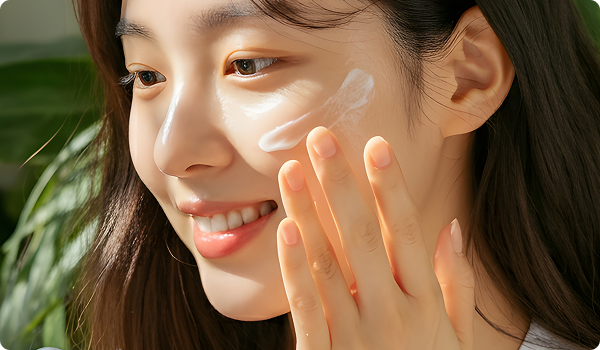
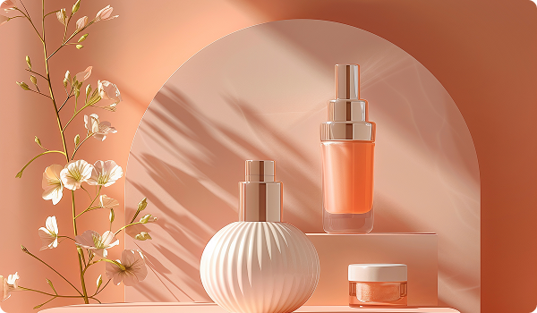

화장품은 유행보다 자신의 피부 타입과 고민에 맞게 선택하는 것이 중요합니다. 민감성 피부인지, 건성인지에 따라 필요한 제품이 달라지며 성분을 꼼꼼히 확인하는 습관도 필요합니다. 자신에게 잘 맞는 제품 하나가 피부 변화를 만들어줄 수 있습니다. 화장품은 유행보다 자신의 피부 타입과 고민에 맞게 선택하는 것이 중요합니다. 민감성 피부인지, 건성인지에 따라 필요한 제품이 달라지며 성분을 꼼꼼히 확인하는 습관도 필요합니다. 자신에게 잘 맞는 제품 하나가 피부 변화를 만들어줄 수 있습니다. 화장품은 유행보다 자신의 피부 타입과 고민에 맞게 선택하는 것이 중요합니다. 민감성 피부인지, 건성인지에 따라 필요한 제품이 달라지며 성분을 꼼꼼히 확인하는 습관도 필요합니다. 자신에게 잘 맞는 제품 하나가 피부 변화를 만들어줄 수 있습니다. 화장품은 유행보다 자신의 피부 타입과 고민에 맞게 선택하는 것이 중요합니다. 민감성 피부인지, 건성인지에 따라 필요한 제품이 달라지며 성분을 꼼꼼히 확인하는 습관도 필요합니다. 자신에게 잘 맞는 제품 하나가 피부 변화를 만들어줄 수 있습니다.
화장품은 단순히 외모를 꾸미기 위한 제품을 넘어, 자신을 표현하고 일상 속 자신감을 높여주는 중요한 요소로 자리 잡았습니다. 스킨케어부터 메이크업까지 다양한 제품들은 각자의 피부 고민과 스타일에 맞춰 선택할 수 있으며, 개인의 분위기와 이미지를 더욱 돋보이게 만들어줍니다. 최근에는 단순한 커버 중심의 메이크업보다 건강한 피부 표현과 자연스러운 아름다움을 중요하게 생각하는 트렌드가 이어지면서 피부 본연의 컨디션을 관리하는 스킨케어의 중요성도 함께 커지고 있습니다.
피부 관리는 화장품 사용의 가장 기본이 되는 과정입니다. 아무리 좋은 메이크업 제품을 사용하더라도 피부 상태가 좋지 않다면 원하는 표현을 완성하기 어렵습니다. 그렇기 때문에 자신의 피부 타입을 정확히 이해하고 그에 맞는 제품을 선택하는 것이 중요합니다. 건성 피부는 충분한 보습과 영양 공급이 필요하며, 지성 피부는 유분 밸런스를 조절해줄 수 있는 가벼운 제형의 제품이 적합합니다. 또한 민감성 피부의 경우 성분을 꼼꼼히 확인하고 피부 자극을 최소화할 수 있는 제품을 사용하는 것이 좋습니다.


최근 화장품 시장은 기능성과 성분 중심으로 빠르게 변화하고 있습니다. 소비자들은 단순히 브랜드 이미지나 패키지만을 보는 것이 아니라 제품에 어떤 성분이 들어 있는지, 피부에 어떤 도움을 줄 수 있는지를 중요하게 생각합니다. 히알루론산, 세라마이드, 판테놀처럼 피부 보습과 장벽 강화에 도움을 주는 성분이나 비타민C, 나이아신아마이드처럼 피부 톤 개선에 도움을 주는 성분들이 많은 관심을 받고 있습니다. 이처럼 자신에게 필요한 성분을 이해하고 선택하는 것은 건강한 피부 관리에 큰 도움이 됩니다.
메이크업 또한 단순히 얼굴을 꾸미는 것을 넘어 자신의 개성과 분위기를 표현하는 수단으로 활용되고 있습니다. 과거에는 진하고 화려한 메이크업이 유행했다면 최근에는 자연스럽고 깨끗한 피부 표현, 은은한 색조를 활용한 데일리 메이크업이 많은 사랑을 받고 있습니다. 특히 피부 결을 살리는 베이스 메이크업과 부담스럽지 않은 컬러 조합은 일상에서도 편안하게 활용할 수 있어 꾸준한 인기를 얻고 있습니다. 또한 퍼스널 컬러에 맞는 화장품을 선택하는 문화가 확산되면서 자신에게 가장 잘 어울리는 색감을 찾는 소비자들도 점점 늘어나고 있습니다.